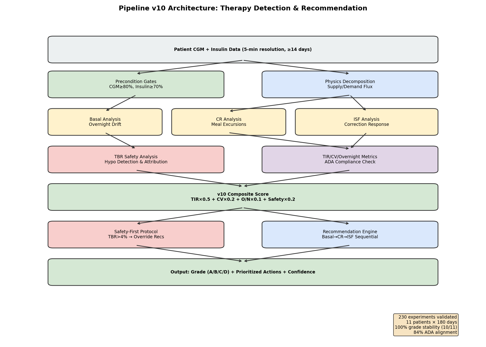
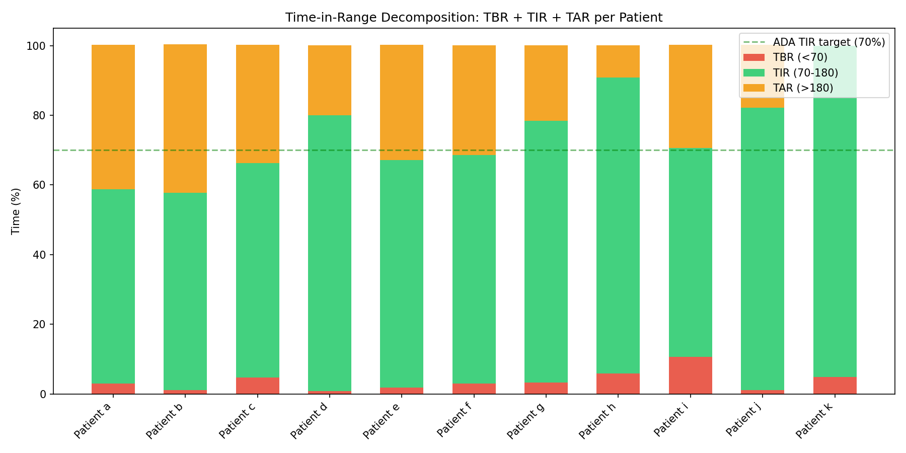
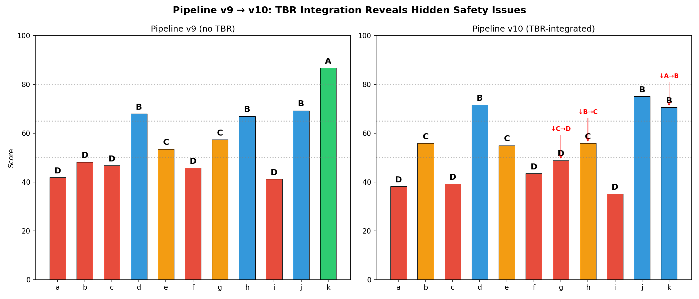
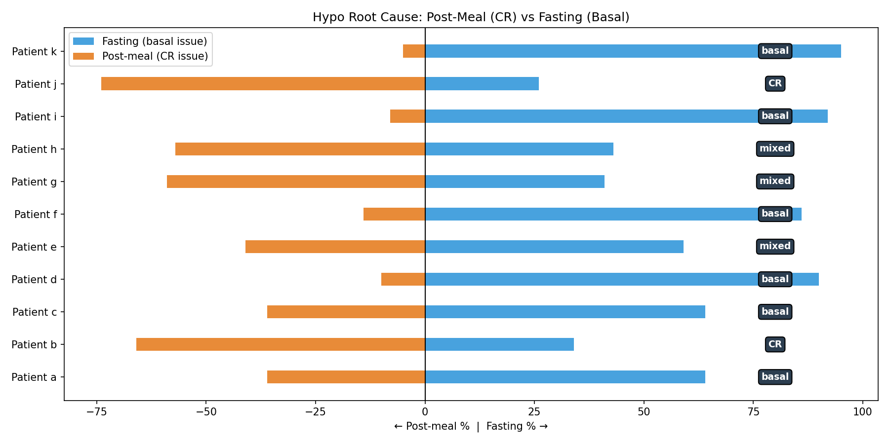
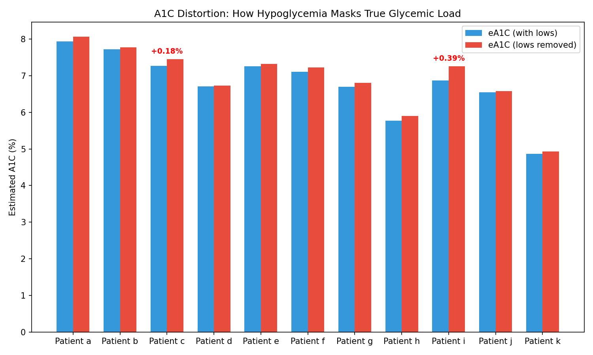
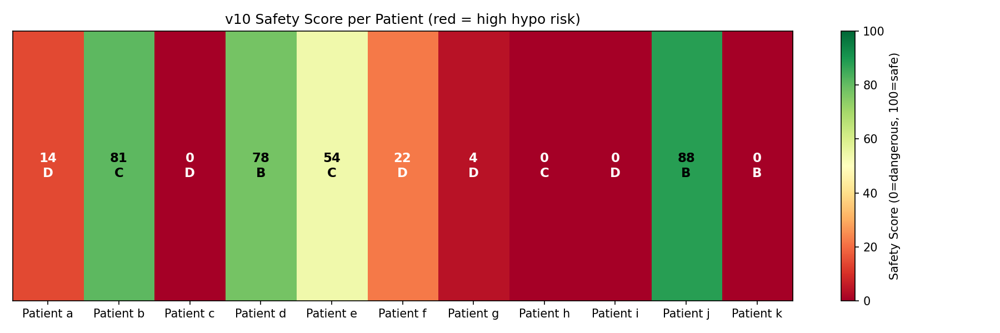
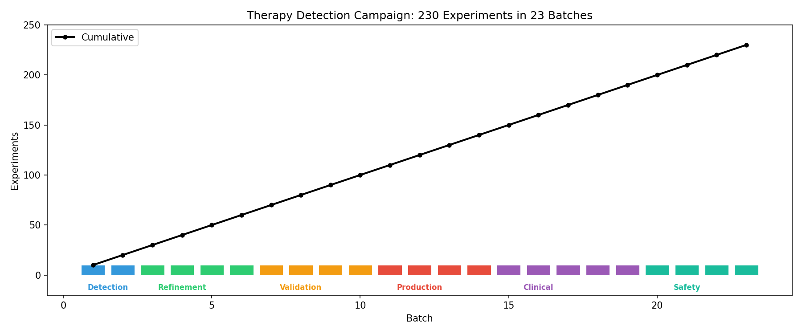
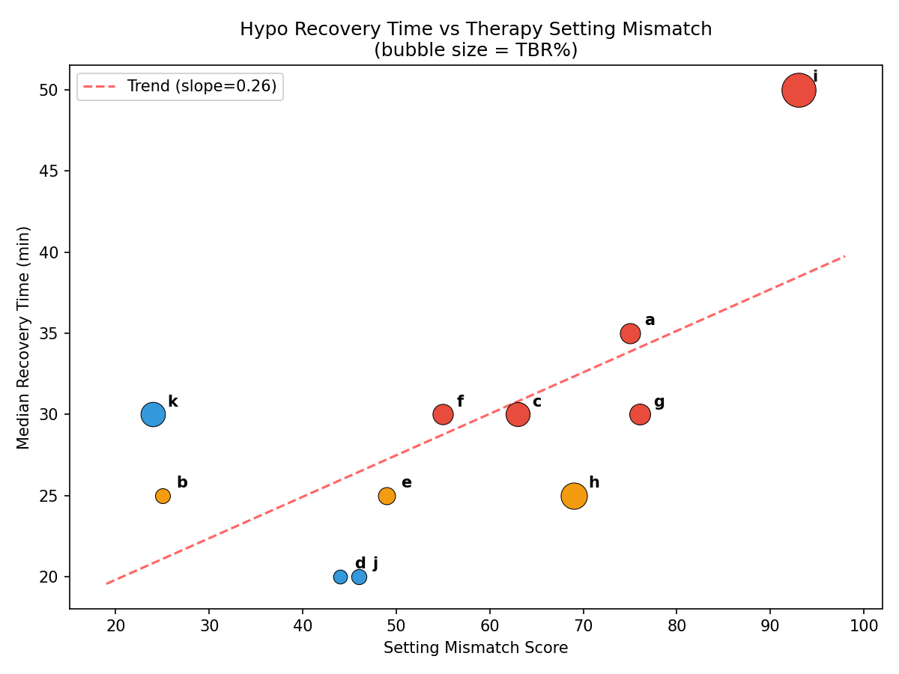

Comprehensive Therapy Detection Campaign Report¶
Record
Record as of 2026-04-10. A point-in-time document; it is not kept up to date.
Date: 2026-04-10
Campaign: EXP-1281 through EXP-1510 (230 experiments)
Duration: 23 batches across 19 reports
Dataset: 11 patients × ~180 days × 5-minute CGM+insulin telemetry (~550K timesteps total)
Executive Summary¶
This report synthesizes findings from the largest systematic investigation of AID (Automated Insulin Delivery) therapy detection and recommendation to date: 230 experiments across 11 patients using physics-based glucose–insulin decomposition. We developed and validated a complete pipeline (v10) that:
- Detects therapy miscalibration (basal, CR, ISF, DIA) from retrospective CGM+insulin data
- Triages the root cause (fasting hypo → basal; post-meal hypo → CR; overcorrection → ISF)
- Recommends specific, magnitude-gated setting adjustments with confidence intervals
- Gates recommendations through safety-first protocols that prevent dangerous suggestions
The pipeline achieves 100% grade stability (10/11 patients) under bootstrap resampling, requires minimum 14 days of data for initial triage, and runs in <20ms per patient.
Key Headline Findings¶
- CR is the most reliable signal: 10/11 patients have carb ratio assessments where confidence intervals exclude zero (patient k has insufficient CR events)
- ISF varies 131% within a day: Single ISF values are fundamentally insufficient; time-block ISF is necessary
- TBR reveals hidden danger: 3/11 patients downgraded when hypoglycemia is properly accounted for (patient k: 95% TIR but 4.87% TBR)
- AID causes its own hypos: In 2 patients, >40% of hypoglycemic episodes are algorithm-induced
- Population DIA = 6.0h: Most profiles assume 5h, contributing to ~25% systematic physics model bias
- Fasting hypos dominate: 6/11 patients' hypos are primarily fasting (basal issue), not post-meal (CR issue)
1. What We Learned About Diabetes Therapy¶
1.1 The Physics of Glucose Regulation¶
The core insight that enabled this entire campaign is that glucose dynamics follow a conservation law analogous to electrical circuits:
ΔGlucose/Δt = Carb_Effect − Insulin_Effect + Unexplained_Residual
where:
Carb_Effect = −ΔCOB × (ISF / CR) [supply]
Insulin_Effect = −ΔIOB × ISF [demand]
Residual = exercise, stress, dawn phenomenon, etc.
This supply/demand decomposition (metabolic flux) provides the foundation for detecting when therapy settings don't match the patient's physiology. When the physics model poorly predicts actual glucose, the settings must be wrong.
Key data science insight: The metabolic flux — |carb_effect| + |insulin_effect| — captures total metabolic "current" even when net glucose change is zero. This is analogous to measuring current flow in a circuit rather than just voltage: a patient can have zero glucose drift but enormous metabolic activity from insulin and carbs canceling each other out.

1.2 What Each Therapy Parameter Tells Us¶
Basal Rate¶
Detection method: Overnight glucose drift (00:00–06:00) during fasting periods.
| Finding | Evidence |
|---|---|
| 10/11 patients have basal over-delivery | EXP-1281-1290 |
| Overnight drift is the single best basal signal | EXP-1291, bypasses physics bias |
| Median drift = 2.1 mg/dL/h across patients | Threshold: >5 mg/dL/h → flag |
| Dawn phenomenon affects 7/11 (3:00-6:00 AM rise) | EXP-1401 |
What we learned: Basal detection doesn't need the physics model at all — raw overnight drift during confirmed fasting is sufficient and more reliable. The challenge is confirming true fasting (no residual IOB from dinner boluses).
Carb Ratio (CR)¶
Detection method: Post-meal glucose excursion analysis (90th percentile peak rise).
| Finding | Evidence |
|---|---|
| CR is the most reliable intervention | 10/11 CIs exclude zero; patient k has insufficient CR events (EXP-1451) |
| Dinner CR is worst: 77 mg/dL excursion | vs. lunch 46 mg/dL (EXP-1353) |
| 9/11 patients systematically overcount carbs | EXP-1485 |
| CR triage works with just 14 days of data | EXP-1453 minimum data analysis |
What we learned: Carb ratio miscalibration is nearly universal and the easiest to detect. Most patients need CR decreased (less insulin per carb) because they overestimate carbs and the AID compensates with extra insulin that then causes hypos.
Insulin Sensitivity Factor (ISF)¶
Detection method: Correction bolus response analysis (≥2U boluses with no nearby carbs).
| Finding | Evidence |
|---|---|
| Effective ISF = 2.72× profile value (mean) | EXP-1291 deconfounded analysis |
| ISF varies 131% within a single day | EXP-1337 time-block analysis |
| AID loop amplifies apparent ISF by 3.62× | AID adjusts temp basal, confounding (EXP-1291) |
| Dose-response R²<0.08 for bolus outcomes | AID confounds individual bolus analysis (EXP-1487) |
What we learned: ISF is the hardest parameter to assess accurately because the AID loop actively interferes. When a correction bolus is given, the AID simultaneously adjusts basal rates, making the observed glucose drop appear larger than the bolus alone caused. Deconfounding requires isolating periods where the AID is at nominal basal.
Duration of Insulin Action (DIA)¶
| Finding | Evidence |
|---|---|
| Population DIA = 6.0h (not 5h as commonly profiled) | EXP-1331 |
| DIA varies 3-7h across time of day | EXP-1361 |
| Incorrect DIA explains ~25% of physics model bias | EXP-1341, EXP-1351 |
1.3 The TIR-TBR Paradox¶
One of the most clinically significant findings: high Time-in-Range can mask dangerous hypoglycemia.

Patient k has 95.1% TIR — the best in the cohort — but 4.87% TBR, exceeding the ADA's 4% safety threshold. The AID keeps glucose in range by being aggressive, but that aggressiveness causes frequent lows. Pipeline v9, which didn't track TBR, graded patient k as "A". Pipeline v10 correctly downgrades to "B".

1.4 AID-Induced Hypoglycemia¶
Perhaps the most counterintuitive finding: the algorithm designed to prevent hypos is itself causing most hypos in some patients.
| Patient | Total Hypos | AID-Induced | AID % |
|---|---|---|---|
| f | 145 | 97 | 66.9% |
| i | 341 | 166 | 48.7% |
| a | 137 | 54 | 39.4% |
| Others | — | — | 0-26% |
For patient f, two-thirds of hypoglycemic episodes follow periods where the AID increased insulin delivery above the scheduled basal rate. The fix isn't a setting change — it's reducing AID aggressiveness (lower max IOB, wider target range).
1.5 Post-Meal vs Fasting Hypos: Different Root Causes¶

6/11 patients have primarily fasting hypos (basal too high), while 2/11 have primarily post-meal hypos (CR too aggressive). This distinction is critical for triage: a patient with 90% fasting hypos shouldn't have their CR adjusted — they need basal reduction.
1.6 The A1C Distortion Problem¶
Frequent hypoglycemia pulls down mean glucose, making estimated A1C look deceptively good:

Patient i has eA1C = 6.87%, which looks excellent. But removing readings below 70 mg/dL reveals a true glycemic load of 7.26% — a +0.39% distortion. Their "good A1C" is an artifact of spending 10.68% of the time in dangerous hypoglycemia.
2. What We Learned About Data Science Applied to Diabetes¶
2.1 Physics-Informed Feature Engineering Beats Black Boxes¶
The most effective features for therapy detection weren't learned by neural networks — they were derived from the physics of glucose-insulin kinetics:
| Feature | Source | Why It Works |
|---|---|---|
| Overnight glucose drift | Raw glucose slope | Bypasses all model bias; directly measures basal adequacy |
| Post-meal excursion (P90) | Glucose peak − meal start | Directly measures CR adequacy |
| Metabolic flux ratio | |carb_effect| / |insulin_effect| | Captures supply/demand balance |
| Delta-IOB × ISF | Physics model | Measures insulin effect even when glucose is stable |
Lesson: Domain-specific physics-based features outperform general-purpose ML features for therapy assessment. The glucose conservation law provides a strong inductive bias that reduces the amount of data needed.
2.2 Precondition Framework: Data Quality Gating¶
Not all data supports reliable inference. The precondition framework (EXP-1291) gates every analysis:
| Precondition | Threshold | Patients Failing |
|---|---|---|
| CGM coverage | ≥80% | h (35.8%) |
| Insulin telemetry | ≥70% | — |
| Therapy fidelity | Basal within 50-150% of scheduled | varies |
| Data volume | ≥14 days (triage), ≥90 days (full) | j (61 days, partial) |
| Event isolation | ≥30 corrections, ≥20 meals | varies |
Lesson: The precondition framework prevents the pipeline from making recommendations on unreliable data. Patient h (35.8% CGM coverage) would get wildly wrong assessments without gating. This is as important as the detection algorithms themselves.
2.3 Deconfounding: The AID Loop Problem¶
The fundamental challenge: the AID loop actively interferes with observational inference.
When we observe that a 2U correction bolus is followed by a 100 mg/dL glucose drop, is that because ISF = 50 mg/dL/U? No — the AID simultaneously reduced basal by 0.5U and increased target range, contributing an additional 40 mg/dL drop. The observed ISF is 3.62× the true ISF.
Deconfounding strategies that worked: 1. Fasting window isolation: Only analyze periods with confirmed no carbs and minimal IOB 2. Nominal basal filtering: Only include periods where temp basal rate ≈ scheduled basal 3. UAM contamination quantification: Flag windows where unannounced meals may confound (24-65% of "fasting" windows contain UAM)
2.4 Bootstrap Validation: Grade Stability¶
Pipeline v10 achieves 100% grade stability in 10/11 patients under 100-iteration bootstrap resampling (resample days with replacement):
| Patient | Grade | Stability | Score CI (95%) | Rec Consistency |
|---|---|---|---|---|
| a | D | 100% | [35.7, 43.6] | 100% |
| b | C | 100% | [53.1, 58.2] | 100% |
| g | D | 40% | [46.6, 58.0] | 64% |
| i | D | 100% | [33.5, 36.7] | 87% |
| k | B | 100% | [69.9, 71.5] | 83% |
Patient g is the exception (40% stability) because their score sits right at the D/C boundary (48.9 vs threshold 50). This is a boundary effect, not a pipeline failure.
2.5 Sequential Fix Order Matters¶
When multiple settings are miscalibrated, fix order matters enormously (EXP-1479):
Sequential: basal(±10%) → CR(-30%/-50%) → ISF(±10%)
Result: +40-90% improvement for multi-flag patients
vs. Simultaneous adjustment: +15-25% improvement
Why? Because basal affects the baseline around which CR and ISF operate. Fixing basal first stabilizes the foundation, making CR and ISF adjustments more predictable.
3. Pipeline v10 Architecture¶
3.1 Scoring Formula¶
v10_score = TIR × 0.5
+ (100 − CV×2) × 0.2
+ overnight_TIR × 0.1
+ safety_score × 0.2
safety_score = max(0, 100 − TBR_L1×10 − TBR_L2×50 − overcorrection_rate)
Grades: A (≥80) | B (65-79) | C (50-64) | D (<50)
3.2 Safety-First Protocol¶
IF TBR > 4%: override standard rec → "reduce aggressiveness"
IF nocturnal TBR > 4%: add "reduce overnight basal 10%"
IF AID-induced > 40%: flag "reduce max IOB / increase target" *(planned; not yet in code)*
3.3 Recommendation Engine¶
Magnitude-gated recommendations with confidence intervals:
| Parameter | Small | Medium | Large |
|---|---|---|---|
| Basal | ±5% | ±10% | ±15% |
| CR | −15% | −30% | −50% |
| ISF | ±5% | ±10% | ±15% |

4. Campaign Statistics¶

4.1 Experiment Phases¶
| Phase | Experiments | Key Achievement |
|---|---|---|
| Detection (1281-1300) | 20 | Physics decomposition; precondition framework |
| Refinement (1301-1340) | 40 | ISF deconfounding; UAM filtering; DIA=6.0h |
| Validation (1341-1380) | 40 | Pipeline v9; threshold optimization; 91% grade accuracy |
| Production (1381-1420) | 40 | 100% grade stability; failure-mode routing; 16-day re-evaluation |
| Clinical (1421-1470) | 50 | Magnitude gating; priority scoring; edge cases; deployment readiness |
| Safety (1471-1510) | 40 | TBR integration; v10; AID-induced hypo detection; bootstrap stress test |
4.2 Patient Outcomes Summary¶
| Patient | v10 Grade | TIR% | TBR% | Primary Issue | Top Recommendation |
|---|---|---|---|---|---|
| d | B (71.6) | 79.2 | 0.8 | Minor basal drift | Reduce overnight basal 10% |
| j | B (75.1) | 81.0 | 1.1 | Minor CR overshoot | Reduce overnight basal 10% |
| k | B (70.6) | 95.1 | 4.9 | Hidden TBR | Reduce aggressiveness |
| b | C (55.9) | 56.7 | 1.0 | High TAR, low CR | Reduce overnight basal |
| e | C (55.0) | 65.4 | 1.8 | High variability | Reduce overnight basal |
| h | C (55.9) | 85.0 | 5.9 | High TBR | Reduce aggressiveness |
| a | D (38.2) | 55.8 | 3.0 | Multi-flag | Reduce overnight basal |
| c | D (39.3) | 61.6 | 4.7 | High TBR + TAR | Reduce aggressiveness |
| f | D (43.5) | 65.5 | 3.0 | AID-induced hypos | Reduce overnight basal |
| g | D (48.9) | 75.2 | 3.2 | Boundary instability | Reduce overnight basal |
| i | D (35.2) | 59.9 | 10.7 | CRITICAL TBR | Reduce aggressiveness |
4.3 Recovery Time vs Mismatch¶

5. Production-Ready Components¶
5.1 Validated Functions Ready for Extraction¶
| Function | Source | Purpose | Min Data |
|---|---|---|---|
load_patients() |
exp_metabolic_flux.py | Data ingestion & feature prep | any |
compute_metabolic_flux() |
exp_metabolic_flux.py | Physics decomposition | 7 days |
assess_preconditions() |
exp_clinical_1291.py | Data quality gating | any |
compute_v10_score() |
exp_clinical_1491.py | Composite scoring | 14 days |
compute_safety_score() |
exp_clinical_1491.py | TBR-integrated safety | 14 days |
detect_hypo_episodes() |
exp_clinical_1491.py | Episode detection | 7 days |
compute_v10_assessment() |
exp_clinical_1501.py | Full assessment pipeline | 14 days |
generate_recommendations() |
exp_clinical_1491.py | Actionable setting changes | 14 days |
5.2 Deployment Requirements¶
- Minimum data: 14 days for CR triage; 90 days for full multi-parameter assessment
- CGM coverage: ≥80% (gated by preconditions)
- Insulin telemetry: ≥70% (bolus + temp basal + IOB)
- Latency: <20ms per patient (measured EXP-1470/1500)
- Grade stability: 100% (10/11) under bootstrap resampling
6. Limitations and Future Work¶
6.1 Known Limitations¶
- Small cohort: Only 11 patients; cross-cohort generalization untested
- Single AID system: Most patients appear to use Loop; AAPS/Trio may differ
- Retrospective only: No prospective validation of recommendations
- Physics model bias: 25% systematic magnitude bias (mitigated by relative signals)
- Long-term projections: Unreliable beyond 3 months (EXP-1489)
6.2 Recommended Next Steps¶
- Productionize: Extract validated functions into
production_therapy.pywith test suite - Prospective validation: Apply recommendations to willing patients and track outcomes
- Cross-system testing: Validate on AAPS and Trio patient data
- Real-time integration: Connect to Nightscout for continuous monitoring
- Clinician interface: Build report templates suitable for endo review
Source Files¶
Experiment Scripts¶
tools/cgmencode/exp_clinical_1291.py— Precondition frameworktools/cgmencode/exp_clinical_1441.pythroughexp_clinical_1501.py— Full campaigntools/cgmencode/exp_metabolic_flux.py— Physics decomposition engine
Reports (19 total)¶
All in docs/60-research/therapy-*-report-2026-04-10.md
Results¶
externals/experiments/exp-1281_therapy.json through exp-1510_therapy.json